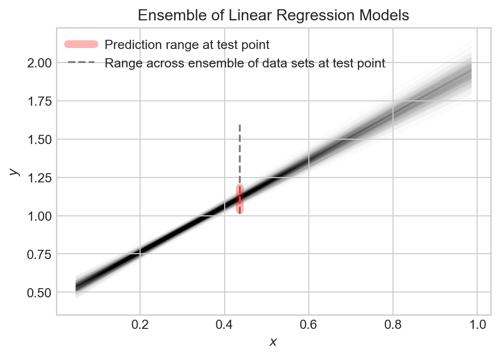
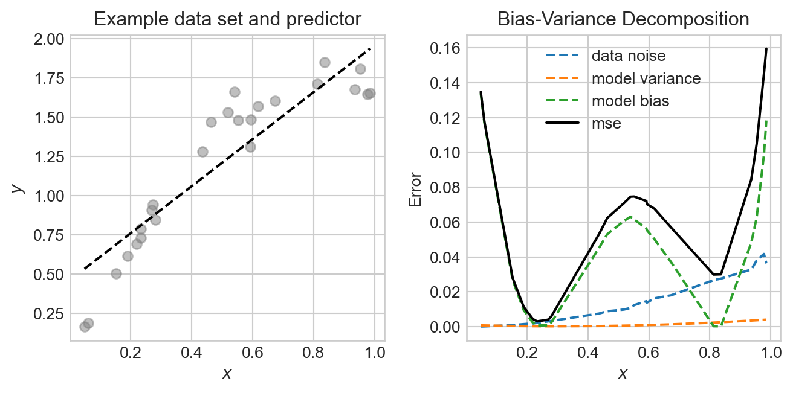
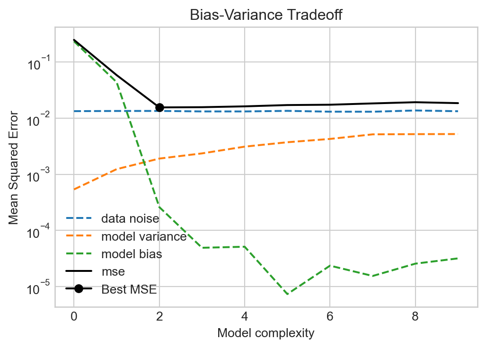
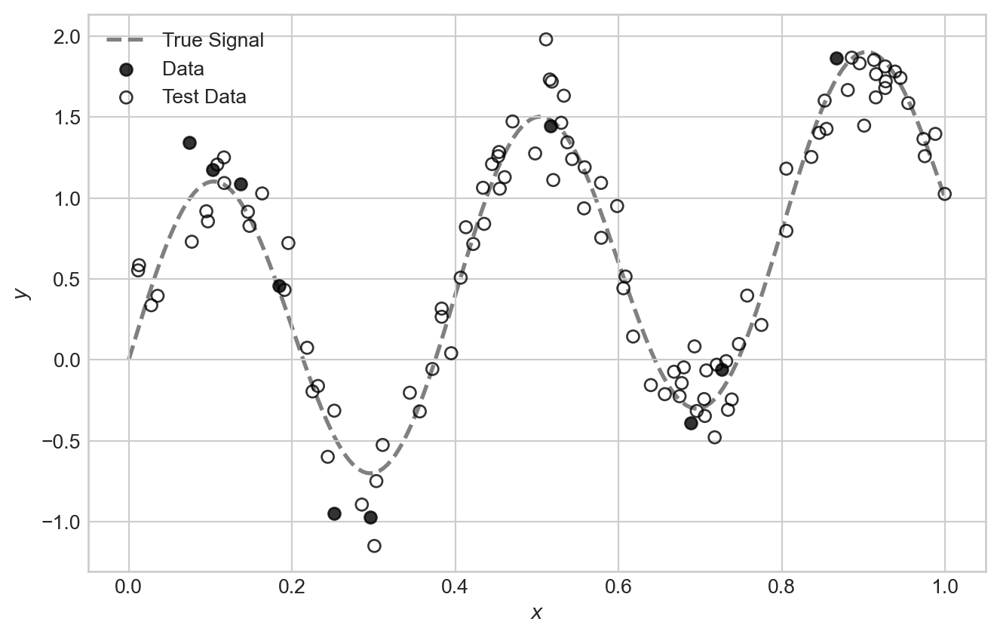
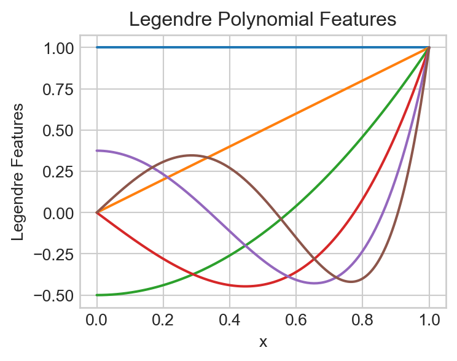
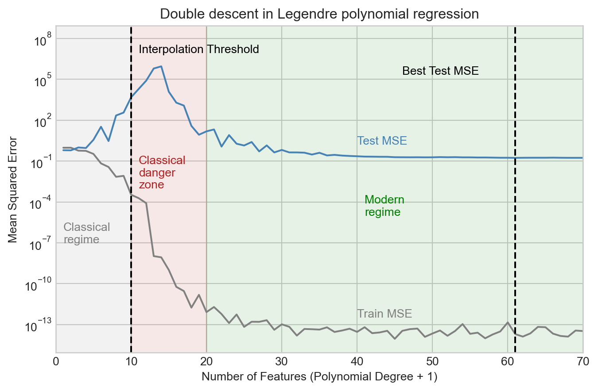
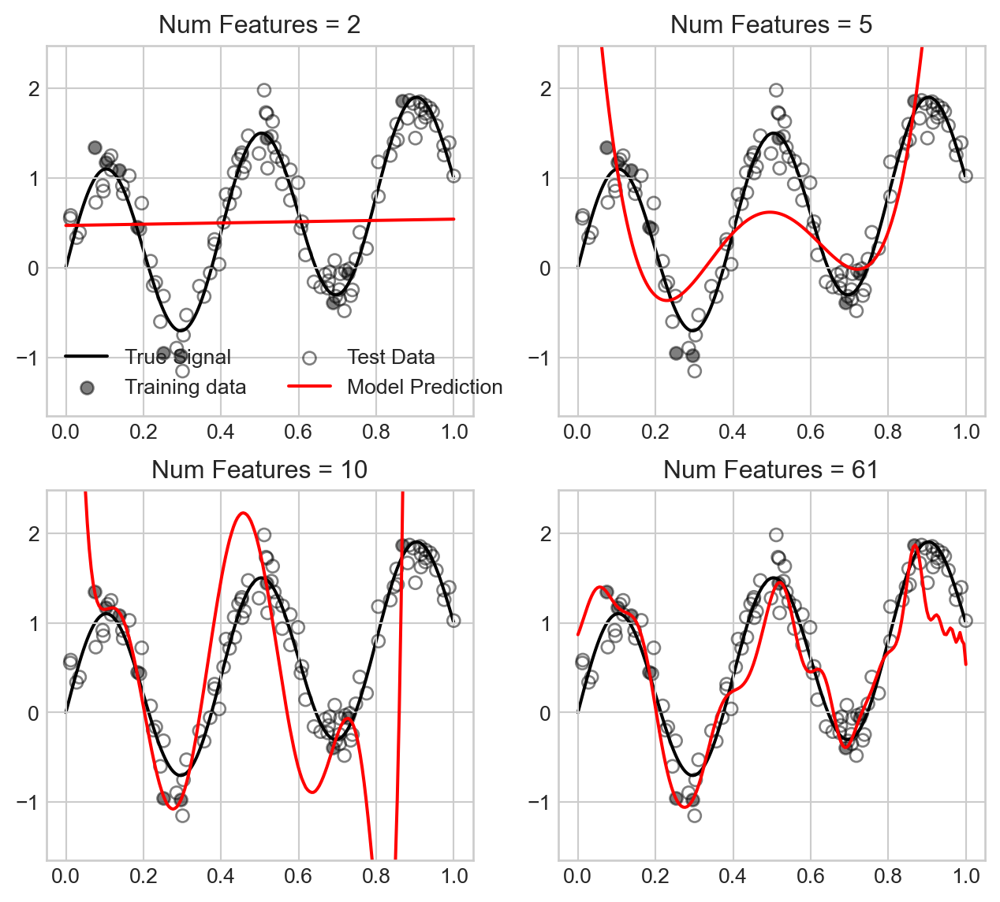

import torch
class LinearRegression:
def __init__(self, n_params):
self.w = torch.zeros(n_params, 1, requires_grad=True)
def forward(self, X):
return X @ self.w
class ClosedFormOptimizer:
def __init__(self, model):
self.model = model
def step(self, X, y):
self.model.w = torch.linalg.lstsq(X, y).solution
def train(model, X, y):
opt = ClosedFormOptimizer(model)
opt.step(X, y)5 More on Overfitting
A theoretical framework for reasoning about model complexity.
Open the live notebook in Google Colab.
Introduction
Several times in these notes, we’ve seen the topic of overfitting arise. In this set of lecture notes, we’ll define overfitting more formally. We’ll then look at overfitting from two perspectives: the bias-variance decomposition, and the modern phenomenon of double descent.
Definition 5.1 (Overfitting) Overfitting refers to any situation in which increasing the complexity of a model causes the model to improve its performance on training data but worsen its performance on test data.
In terms of the signal + noise paradigm of modeling,
\[ \begin{align} y & = f(x) + \epsilon \end{align} \]
overfitting occurs when an estimator begins to approximate the noise \(\epsilon\) rather than the signal \(f(x)\).
For several decades, the received wisdom in the statistics and machine learning communities was that models begin to overfit when they become “too complex.” Model complexity is frequently measured in terms of the number of parameters present in the model. So far in these notes, we’ve exclusively studied models where the number of parameters is equal to the number of features, so another way to think about model complexity is in terms of the total number of features.
Bias-Variance Decomposition
One theoretical view of the sources of overfitting comes from the bias-variance decomposition.
Many data sets, many models
In the bias-variance decomposition, we consider a series of experiments. In each experiment, we pull a data set \((\mathbf{X},\mathbf{y})\) from some data generating distribution, fit a model to that data, and then make a prediction about an element \(Y\) in the test set. Since the data set we pull in each experiment is random, the value \(Y\) in the test set is random. Furthermore, since the training data is random, the fitted model \(\hat{f}\) and the resulting prediction \(\hat{Y}\) will also be random.
Let’s illustrate the setup. For the experiments in this chapter, we need to run a LOT of regression models. For this reason, we’ll use a special, very efficient implementation of linear regression that allows us to fit models in closed form. This is not a general approach to fitting models, but it will allow us to run the experiments in this chapter much more quickly.
- This is a method that obtains the least-squares solution to the linear regression problem using specialized linear algebra methods. It’s very fast and useful for us today, but doesn’t generalize well to other kinds of machine learning problems.
Now we’ll illustrate generating many data sets from the same data generating distribution, fitting a model, and making a prediction \(\hat{Y}\) for some new unseen point \(x\) in the test set. For today, we’ll consider the following data generating function, which accepts a fixed set of inputs \(x\) and generates a random output \(y\) for each input according to the signal + noise paradigm. Unlike in many other models, this particular data generating process gets noisier as \(x\) increases, which will allow us to illustrate how the bias and variance of the model can vary across different regions of the input space.
def generate_data(x, sig, freq):
signal = torch.sin(freq * torch.pi * x) + x
noise = torch.randn_like(x)*sig*x
y = signal + noise
return yCode
from matplotlib import pyplot as plt
sig = 0.2
freq = 0.8
fig, ax = plt.subplots(1, 3, figsize=(7, 2.5))
n_points = 25
x = torch.rand(n_points,)
x = torch.sort(x).values
test_ix = 10
for i in range(3):
y = generate_data(x, sig=sig, freq=freq)
x_test = x[test_ix].unsqueeze(0)
y_test = generate_data(x_test, sig=sig, freq=freq)
ax[i].scatter(x, y, alpha=0.8, color='grey')
ax[i].scatter(x_test, y_test, alpha=0.8, color='k', zorder = 100)
ax[i].set_title(f"Experiment {i+1}")
ax[i].set_xlabel(r"$x$")
if i == 0:
ax[i].set_ylabel(r"$y$")
model = LinearRegression(n_params=2)
X = torch.stack([torch.ones_like(x), x], dim=1)
train(model, X, y)
x_viz = torch.linspace(0, 1, 200)
X_viz = torch.stack([torch.ones_like(x_viz), x_viz], dim=1)
y_pred = model.forward(X_viz).detach().squeeze()
ax[i].plot(x_viz, y_pred, color='black', label="Model Prediction", linestyle='--')
X_test = torch.stack([torch.ones_like(x_test), x_test], dim=1)
y_pred_test = model.forward(X_test).detach().squeeze()
ax[i].plot([x_test.item(), x_test.item()], [y_test.item(), y_pred_test.item()], color='orange', label="Prediction at test point", markersize=10, zorder = 10)
plt.tight_layout()
Note that, although each plot is somewhat similar, the data points, fitted model, and prediction at the test point are all slightly different across the three experiments. This is because the data we pull in each experiment is random, which causes the fitted model and resulting prediction to also be random.
Let’s repeat the experiment a large number of times and store the results.
n_reps = 1000
targets = torch.zeros(n_reps, len(x))
predictions = torch.zeros(n_reps, len(x))
for i in range(n_reps):
1 y_train = generate_data(x, sig=sig, freq=freq)
2 X = torch.stack([torch.ones_like(x), x], dim=1)
3 model = LinearRegression(n_params=2)
train(model, X, y_train)
predictions[i] = model.forward(X)
4 targets[i] = generate_data(x, sig=sig, freq=freq)- 1
- Generate the training data.
- 2
- Add a constant feature to the input data for the intercept term in linear regression.
- 3
- Fit the linear regression model to the training data.
- 4
- Generate the target values for the test data, independently from the training data.
We now have 1,000 different fitted models and predictions. Let’s visualize the ensemble of fitted models:
Code
fig, ax = plt.subplots(1, 1, figsize=(6, 4))
test_point_ix = 10
for i in range(n_reps):
ax.plot([x[0], x[-1]], [predictions[i,0], predictions[i,-1]], color='black', alpha=0.005, zorder = 0)
ax.set(xlabel = r"$x$", ylabel = r"$y$", title = "Ensemble of Linear Regression Models")
ax.plot([x[test_point_ix], x[test_point_ix]], [predictions[:, test_point_ix].min(), predictions[:, test_point_ix].max()], color='red', label="Prediction range at test point", zorder = 200, linewidth = 6, alpha = 0.3)
ax.plot([x[test_point_ix], x[test_point_ix]], [targets[:, test_point_ix].min(), targets[:, test_point_ix].max()], color='grey', label="Range across ensemble of data sets at test point", zorder = 100, linestyle='--')
l = ax.legend()
Collectively, the models capture the general trend, but each varies slightly from the others. The prediction \(\hat{Y}\) at any given point \(x\) is random, and the target value \(Y\) at that point is also random.
Decomposing the Error
So, at any given point \(x\), we have a random target value \(Y\) and a random prediction \(\hat{Y}\). We can measure how close \(\hat{Y}\) is to \(Y\) using the expected squared error (this is the theoretical analogue of the MSE): \[ \begin{align*}\mathcal{E}& = \mathbb{E}[(Y - \hat{Y})^2]\end{align*} \]
Many presentations of the bias-variance decomposition consider the complete expected squared error of the model on all possible inputs. This has the effect of throwing an integral sign in front of the calculation, but does not otherwise change the story.
Important: because we are assuming that \(Y\) is from the test data set, on which \(\hat{Y}\) is not trained, \(\hat{Y}\) and \(Y\) are independent random variables.
Let’s now study what contributes to the expected testing squared error \(\mathcal{E}\). We can decompose \(\mathcal{E}\) into three terms: the bias of the model, the variance of the model, and the noise in the data. It’s helpful to define \(\mu = \mathbb{E}[Y]\) and \(\hat{\mu} = \mathbb{E}[\hat{Y}]\) to be the expected value of the target and prediction, respectively.
Throughout this calculation, we are using standard algebra rules and the linearity properties of expectation: for any \(a,b\in \mathbb{R}\) and random variables \(Z_1\) and \(Z_1\), \(\mathbb{E}[aZ_1 + bZ_2] = a\mathbb{E}[Z_1] + b\mathbb{E}[Z_2]\). We’re also at a key point using the independence property: if \(Z_1\) and \(Z_2\) are independent random variables, then \(\mathbb{E}[Z_1Z_2] = \mathbb{E}[Z_1]\mathbb{E}[Z_2]\).
\[ \begin{aligned} \mathcal{E}&= \mathbb{E}[(\hat{Y} - Y)^2] \\ &= \mathbb{E}[\hat{Y}^2 - 2\hat{Y}Y + Y^2] \\ &= \mathbb{E}[\hat{Y}^2] - 2\mathbb{E}[\hat{Y}]\mathbb{E}[Y] + \mathbb{E}[Y^2] \\ &= \mathbb{E}[\hat{Y}^2] - 2\hat{\mu}\mu + \mathbb{E}[Y^2] &\quad \text{(independence of $Y$ and $\hat{Y}$)} \\ &= \mathbb{E}[\hat{Y}^2] - \hat{\mu}^2 + \hat{\mu}^2 - 2\hat{\mu}\mu + \mu^2 + \mathbb{E}[Y^2] - \mu^2 \\ &= (\mathbb{E}[\hat{Y}^2] - \hat{\mu}^2) + (\hat{\mu} - \mu)^2 + (\mathbb{E}[Y^2] - \mu^2) \\ &= \underbrace{\mathrm{Var}(\hat{Y})}_\text{model variance} + \underbrace{(\hat{\mu} - \mu)^2}_\text{bias} + \underbrace{\mathrm{Var}(Y)}_\text{noise} \end{aligned} \]
Each of the terms in this expression are importantly interpretable:
The model variance \(\mathrm{Var}(\hat{Y})\) captures how much the prediction \(\hat{Y}\) varies across different data sets and fitted models. If the model is very sensitive to the particular data set it is trained on, then the model variance will be high. Models which are more flexible (e.g. by having more parameters and features) tend to have higher model variance.
The bias \((\hat{\mu} - \mu)^2\) captures how much the expected prediction \(\hat{\mu}\) differs from the expected target \(\mu\). If the model is very inflexible and cannot capture the true signal, then the bias will be high. Models which are less flexible (e.g. by having fewer parameters and features) tend to have higher bias.
Finally, the data noise \(\mathrm{Var}(Y)\) captures how much the target value \(Y\) varies across different data sets. This is a property of the data generating process. It is impossible to achieve test error lower than the data noise, since the noise is a property of the data generating process and not the model.
Let’s compute each of these terms from the linear regression experiment that we did earlier. Since our analysis above was at a specific data point, we are going to compute values at each data point and then compare.
noise = targets.var(dim = 0, correction = 0)
variance = predictions.var(dim = 0, correction = 0)
bias = (targets.mean(dim = 0) - predictions.mean(dim = 0))**2
mse = ((targets - predictions)**2).mean(dim = 0)Now we can get a quantitative description of the sources of error in our model by plotting each one and the total mean-squared error. We’ll show this alongside an example data set and predictor for comparison:
Code
fig, ax = plt.subplots(1, 2, figsize=(7, 3.5))
ax[0].scatter(x, targets[0], alpha = 0.5, color = "grey")
y_hat = predictions.mean(dim = 0)
ax[0].plot(x, y_hat, color='black', linestyle='--', label="Model Prediction")
ax[0].set(xlabel = r"$x$", ylabel = r"$y$", title = "Example data set and predictor")
ax[1].plot(x, noise, label = "data noise", linestyle = "--")
ax[1].plot(x, variance, label = "model variance", linestyle = "--")
ax[1].plot(x, bias, label = "model bias", linestyle = "--")
ax[1].plot(x, mse, label = "mse", color = "black")
ax[1].set(xlabel = r"$x$", ylabel = "Error", title =
"Bias-Variance Decomposition")
plt.legend()
plt.tight_layout()
In this experiment, the noise and bias are the two primary contributors to the mean-squared error, with the model variance being quite low. The data generating process is deliberately constructed so that the data is noisier in certain regions, and so that the model bias also varies across regions.
The Bias-Variance Tradeoff
Since the data noise term in the bias-variance decomposition is a property of the data generating process, the only way to reduce test error is to find a model that reduces either the bias or the variance, without increasing the other. We can often tune the bias and variance by adjusting the model complexity. For example, in the linear regression experiment above, we can increase the number of features. This will have the effect of increasing the variance, while reducing the bias. Let’s try this out, generating the same data many times and then evaluating the bias, variance, and noise for different numbers of features.
Code
def polynomial_features(x, degree):
"""Compute polynomial features for input x up to given degree."""
features = [torch.ones_like(x)] # x^0
for d in range(1, degree + 1):
features.append(x**d)
return torch.stack(features, dim=1) # (n_points, degree + 1)
feature_counts = torch.arange(0, 10)
mse_list = []
bias_list = []
variance_list = []
noise_list = []
for degree in feature_counts:
predictions = torch.zeros(n_reps, len(x))
targets = torch.zeros(n_reps, len(x))
for i in range(n_reps):
y_train = generate_data(x, sig=sig, freq=freq)
model = LinearRegression(n_params=degree + 1)
X = polynomial_features(x, degree=degree)
train(model, X, y_train)
predictions[i] = model.forward(X).detach().squeeze()
y_test = generate_data(x, sig=sig, freq=freq)
targets[i] = y_test
noise = targets.var(dim = 0, correction = 0)
variance = predictions.var(dim = 0, correction = 0)
bias = (targets.mean(dim = 0) - predictions.mean(dim = 0))**2
mse = ((targets - predictions)**2).mean(dim = 0)
mse_list.append(mse.mean())
bias_list.append(bias.mean())
variance_list.append(variance.mean())
noise_list.append(noise.mean())Code
fig, ax = plt.subplots(1, 1, figsize=(6, 4))
ax.plot(feature_counts, noise_list, label = "data noise", linestyle = "--")
ax.plot(feature_counts, variance_list, label = "model variance", linestyle = "--")
ax.plot(feature_counts, bias_list, label = "model bias", linestyle = "--")
ax.plot(feature_counts, mse_list, label = "mse", color = "black")
best_degree = feature_counts[torch.argmin(torch.tensor(mse_list))]
ax.plot(best_degree, mse_list[best_degree], marker='o', color='k', label="Best MSE")
ax.set(xlabel = r"Model complexity", ylabel = "Mean Squared Error", title = "Bias-Variance Tradeoff")
ax.legend()
ax.semilogy()
Figures like Figure 5.4 were canon in the machine learning literature for a long time, with a simple message: more model complexity reduces bias but increases variance. Too much complexity will have diminishing rewards for reducing bias but will tend to increase the variance indefinitely, eventually resulting in overfitting. So don’t make your models too complex!
The Modern Landscape: Interpolation and Double Descent
For a long time in statistics and machine learning, the single-descent curve offered the primary way in which we thought about model complexity. Models with low complexity underfit the data (high bias, low variance), while models with high complexity overfit the data (low bias, high variance). The optimal model complexity balanced these two sources of error to minimize test error. The key was to get enough complexity while avoiding overfitting. The thing you never wanted to do was to interpolate the data, since interpolation is perfect overfitting.
This theoretical story was challenged by the advent of deep learning as a practical tool. Modern deep learning models often have parameter counts in the billions or trillions, which in principle is often enough to perfectly interpolate training data. So why is it that these models nevertheless successfully generalize?
It turns out that there are both bad and good ways to interpolate your data. Models that have the capacity for “good” interpolation can achieve very low test error even while interpolating the training data. Let’s see an example.
This example was inspired by Manuchehr Aminian’s blog post in SIAM News on double descent.
For this problem, we’ll suppose that we need to train a model on very few data points:
Some aspects of this experiment, including the very small number of data sets and use of a special set of polynomial basis functions are somewhat contrived (i.e. carefully staged). This is because double descent is primarily a phenomenon that takes place for models with very large parameter counts. Since we want to illustrate this phenomenon in a way that’s easy to visualize, we have to set things up to make sure it happens here.
Code
import torch
from matplotlib import pyplot as plt
torch.manual_seed(123)
n_points = 10
sig = 0.2
freq = 5
x = torch.rand(n_points,)
signal = torch.sin(freq * torch.pi * x) + x
noise = torch.randn(n_points,)*sig
y = signal + noise
x_test = torch.rand(10*n_points,)
signal_test = torch.sin(freq * torch.pi * x_test) + x_test
noise_test = torch.randn(10*n_points,)*sig
y_test = signal_test + noise_test
x_viz = torch.linspace(0, 1, 200)
signal_viz = torch.sin(freq * torch.pi * x_viz) + x_viz
fig, ax = plt.subplots(figsize = (8,5))
ax.plot(x_viz, signal_viz, color='grey', label="True Signal", zorder = -10, linewidth=2, linestyle='--')
ax.scatter(x, signal + noise, alpha=0.8, label="Data", color = "k")
ax.scatter(x_test, signal_test + noise_test, alpha=0.8, label="Test Data", color='k', facecolors='none')
ax.set_xlabel(r"$x$")
ax.set_ylabel(r"$y$")
ax.legend()
plt.show()
For our feature map in this experiment, we are going to make use of a special set of polynomial features called Legendre polynomials. The first few feature maps are:
\[ \begin{align*} \phi_0(x) & = 1 \\ \phi_1(x) & = x \\ \phi_2(x) & = \frac{1}{2}(3x^2 - 1) \\ \phi_3(x) & = \frac{1}{2}(5x^3 - 3x) \\ \phi_4(x) & = \frac{1}{8}(35x^4 - 30x^2 + 3) \\ \vdots \end{align*} \]
It’s ok if these coefficients look quite mysterious and random to you – the study of the Legendre polynomials is a beautiful and deep topic but not our primary purpose here.
Code
def legendre_features(x, degree):
"""Compute Legendre polynomial features for input x up to given degree."""
features = [torch.ones_like(x)] # P_0(x) = 1
if degree >= 1:
features.append(x) # P_1(x) = x
for n in range(2, degree + 1):
P_n = ((2*n - 1)*x*features[-1] - (n - 1)*features[-2]) / n
features.append(P_n)
return torch.stack(features, dim=1) # (n_points, degree + 1)
We can fit a model using the Legendre polynomial features to data like this:
degree = 5
model = LinearRegression(n_params=degree + 1)
X = legendre_features(x, degree=degree)
train(model, X, y)
x_viz = torch.linspace(0, 1, 200)
X_viz = legendre_features(x_viz, degree=degree)
y_pred = model.forward(X_viz)
Let’s now run an experiment in which we vary the number of polynomial features over a broad range and track the training and test mean squared error (MSE). Recall that the number of features is equal to the polynomial degree plus one (to account for the constant feature).
degree_list = list(range(0, 70))
train_mse_list = []
test_mse_list = []
feature_count = []
for degree in degree_list:
model = LinearRegression(n_params=degree + 1)
X = legendre_features(x, degree=degree)
train(model, X, y)
X_test = legendre_features(x_test, degree=degree)
y_pred_test = model.forward(X_test).detach().squeeze()
train_mse = torch.mean((model.forward(X) - y)**2).item()
test_mse = torch.mean( (y_pred_test - y_test)**2).item()
train_mse_list.append(train_mse)
test_mse_list.append(test_mse)
feature_count.append(degree + 1)Code
fig, ax = plt.subplots(figsize = (8,5))
ax.plot(feature_count, train_mse_list, color = "grey")
ax.plot(feature_count, test_mse_list, color = "steelblue")
ax.annotate("Train MSE", xy=(feature_count[-1]-30, train_mse_list[-1]*10), color='grey')
ax.annotate("Test MSE", xy=(feature_count[-1]-30, test_mse_list[-1]*10), color='steelblue')
ax.fill_betweenx([1e-20, 1e9], 0, n_points, color='grey', alpha=0.1)
ax.annotate("Classical\nregime", xy=(1, 1e-7), color='grey')
ax.fill_betweenx([1e-20, 1e9], n_points, 2*n_points, color='firebrick', alpha=0.1)
ax.annotate("Classical\ndanger\nzone", xy=(n_points + 1, 1e-3), color='firebrick')
ax.fill_betweenx([1e-20, 1e9], 2*n_points, max(feature_count), color='green', alpha=0.1)
ax.annotate("Modern\nregime", xy=(4*n_points + 1, 1e-5), color='green')
ax.axvline(x=feature_count[torch.argmin(torch.tensor(test_mse_list))], color='black', linestyle='--')
ax.annotate("Best Test MSE", xy=(feature_count[torch.argmin(torch.tensor(test_mse_list))] -15, max(test_mse_list)/4), color='black')
ax.axvline(x=n_points, color='black', linestyle='--')
ax.annotate("Interpolation Threshold", xy=(n_points + 1, max(test_mse_list)*10), color='black')
ax.set_xlabel("Number of Features (Polynomial Degree + 1)")
ax.set_ylabel("Mean Squared Error")
ax.set_title(f"Double descent in Legendre polynomial regression")
ax.set_ylim(min(min(test_mse_list), min(train_mse_list))/10, max(max(test_mse_list), max(train_mse_list))*1000)
ax.set_xlim(0, max(feature_count))
ax.semilogy()
We observe that the test MSE increases considerably as we add more features up to the interpolation threshold, and peaks shortly after. However, as we continue to add features, something surprising happens: the test MSE begins to decrease again, and eventually reaches a minimum value beyond the interpolation threshold. This is what is sometimes called the “modern regime” for model complexity in high-dimensional machine learning.
What does this look like in terms of the actual models we fit?
Code
fig, axarr = plt.subplots(2, 2, figsize=(8, 7))
best_num_features = feature_count[torch.argmin(torch.tensor(test_mse_list))]
for i, num_features in enumerate([2, 5, 10, best_num_features]):
degree = num_features - 1
model = LinearRegression(n_params=degree + 1)
X = legendre_features(x, degree=degree)
train(model, X, y)
x_viz = torch.linspace(0, 1, 200)
X_viz = legendre_features(x_viz, degree=degree)
y_pred = model.forward(X_viz).detach().squeeze()
ax = axarr.flatten()[i]
ax.plot(x_viz, signal_viz, color='k', label="True Signal", zorder = -10)
ax.scatter(x, signal + noise, alpha=0.5, label="Training data", color = "k")
ax.scatter(x_test, signal_test + noise_test, alpha=0.5, label="Test Data", color='k', facecolors='none')
ax.plot(x_viz, y_pred, color='red', label="Model Prediction")
ax.set_title(f"Num Features = {num_features}")
ax.set_ylim(min(y_test.min(), y.min()) - 0.5, max(y_test.max(), y.max()) + 0.5)
if i == 0:
ax.legend(ncol = 2)
We observe that for small number of features, the model underfits the data, while as we approach the interpolation threshold the model overfits the data in a way that causes the model predictions to swing wildly. However, as we increase the number of features further, the model predictions become much smoother and closer to the true signal, which explains the improved test MSE.
Double descent remains an actively explored area of research with major practical implications in the context of deep learning models.
© Phil Chodrow, 2025